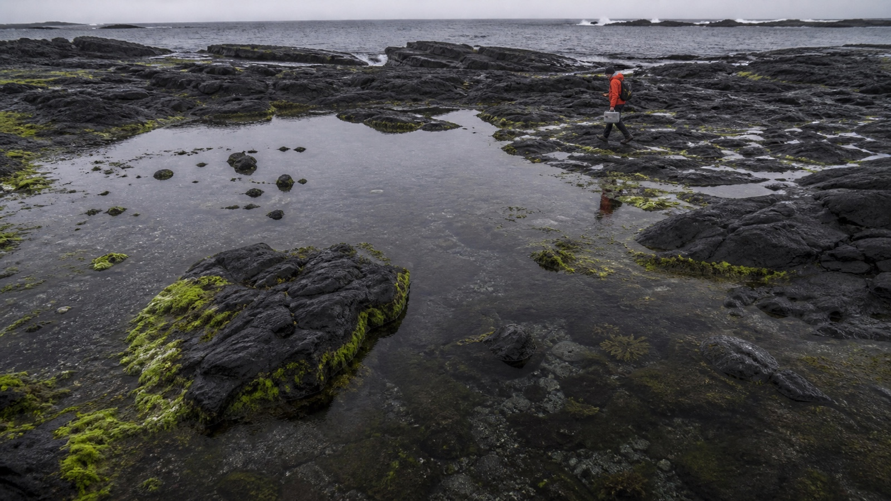
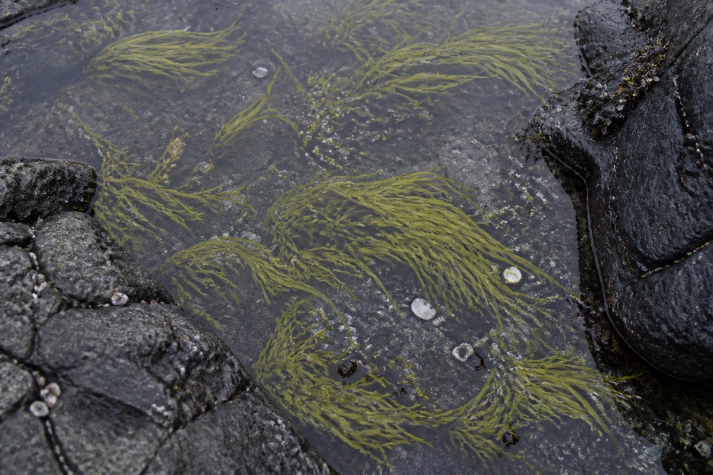
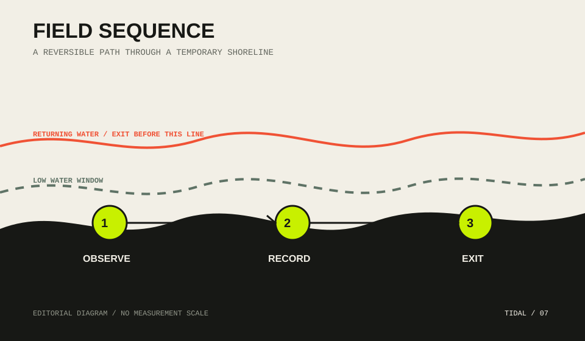

07
Coast
Ecology
Field note
Ecology
Field note
A sample editorial / North Atlantic shore
退潮之后
海水退出岩缝，短暂显露一座由水、石和附着生命共同维护的边界。

摘要
这是一篇用于演示 Website Mode 阅读体验的样本文本。它以潮间带观察为线索，展示长文页面如何组织标题、摘要、图像、正文导航与现场注记，不将未经来源支持的数字包装成研究结论。
Dispatch 01
水退去，尺度才重新出现。
潮池不是缩小的海洋。它有自己的边缘、阴影和时间：一道岩脊决定水如何留下，一次短暂的日照改变表面温度，附着在石壁上的生物则把每一次水位变化记录成身体的方向。
观察从放慢脚步开始。研究者避开松动的藻带，把工具箱放在裸露的岩面上，再沿同一条路径返回。页面也采用同样的节奏：先建立方向，再逐步打开细节，不用连续卡片把阅读切成碎片。
当下一次潮水越过岩脊，这些边界会再次隐没。留下的不是宏大的结论，而是一套可以复查的观察顺序。

